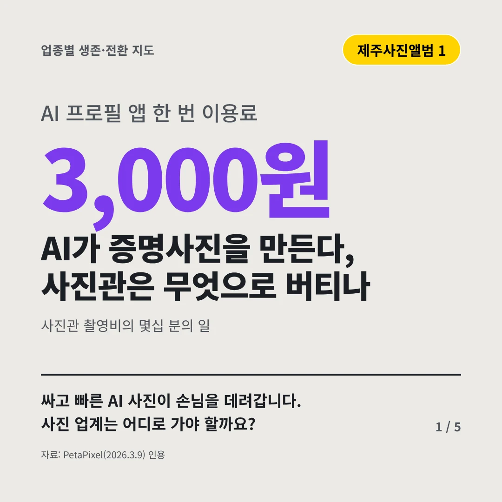
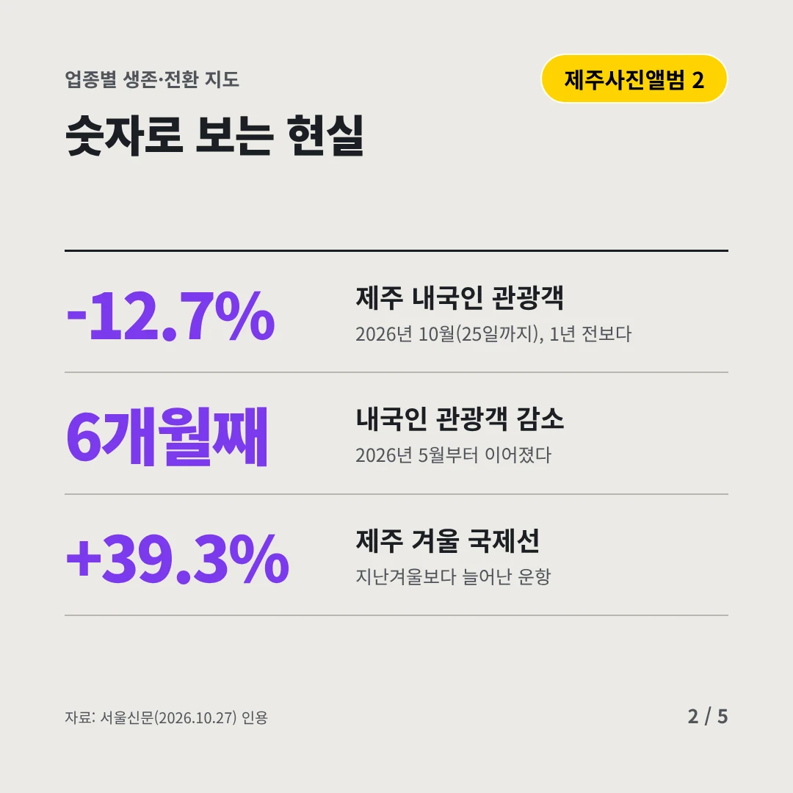
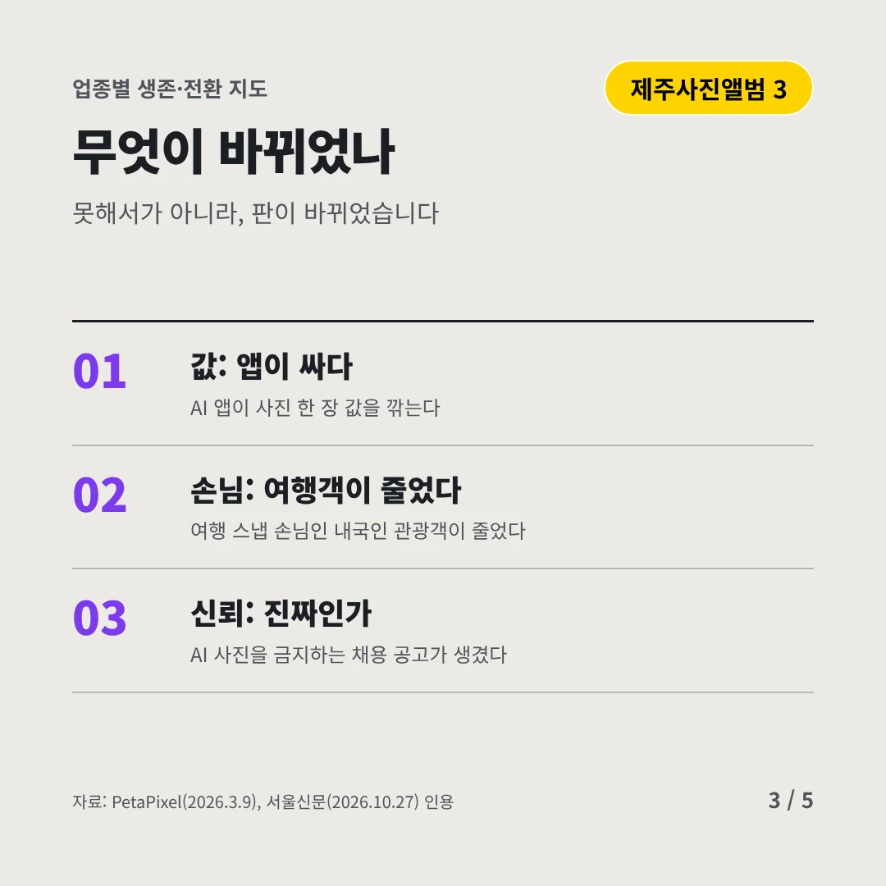
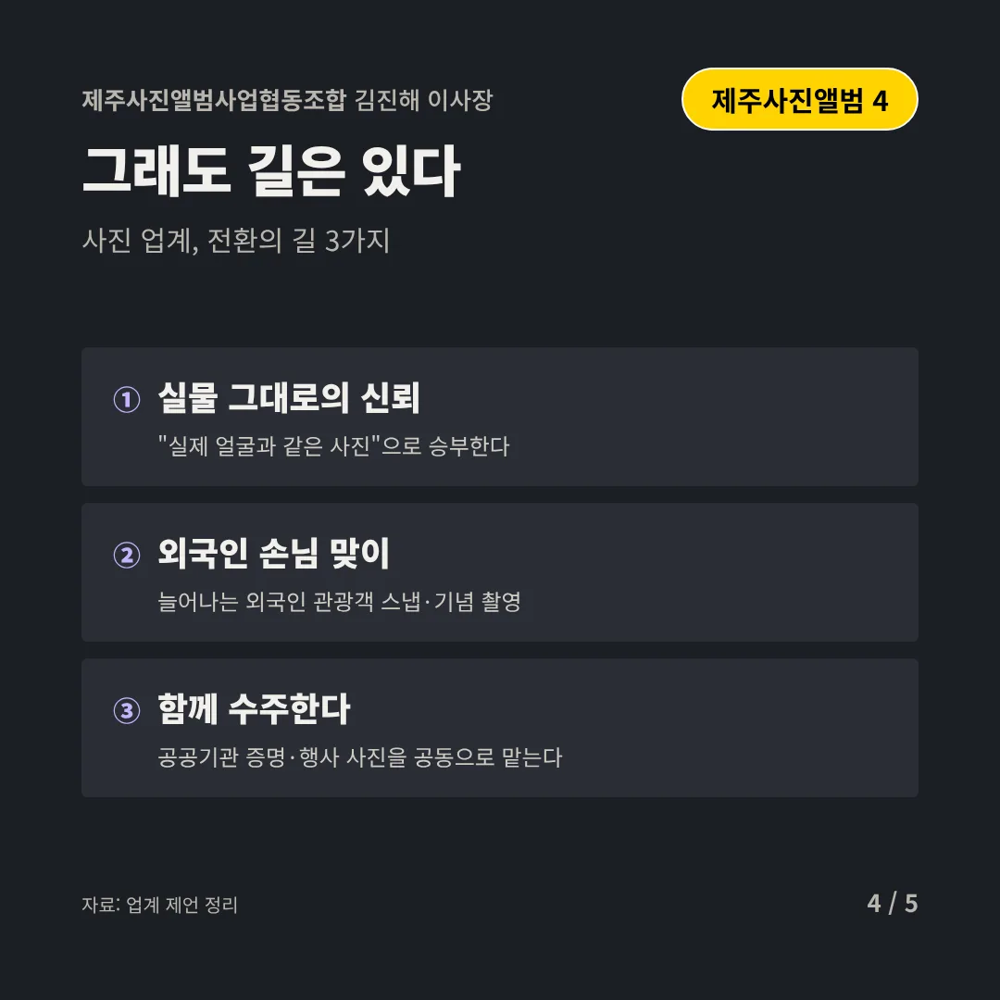
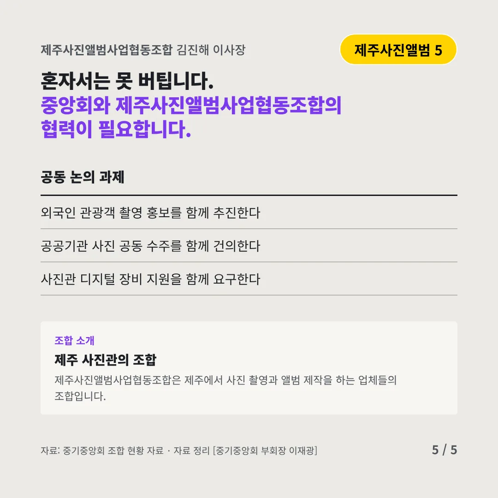
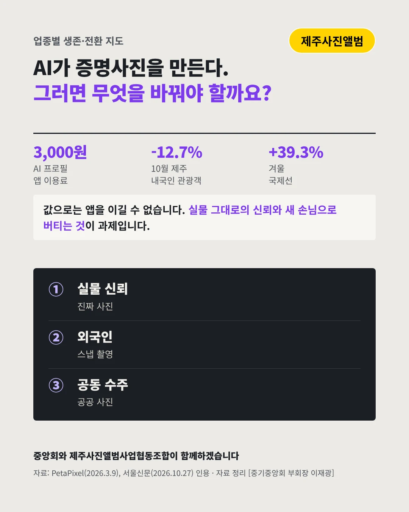

제주사진앨범사업협동조합
AI가 증명사진을 만든다, 사진관은 무엇으로 버티나
3,000원 AI 프로필 앱 한 번 이용료






싸고 빠른 AI 사진이 손님을 데려갑니다. 사진 업계는 어디로 가야 할까요?
숫자로 보는 현실
- -12.7%제주 내국인 관광객2026년 10월(25일까지), 1년 전보다
- 6개월째내국인 관광객 감소2026년 5월부터 이어졌다
- +39.3%제주 겨울 국제선지난겨울보다 늘어난 운항
무엇이 바뀌었나
- 값: 앱이 싸다AI 앱이 사진 한 장 값을 깎는다
- 손님: 여행객이 줄었다여행 스냅 손님인 내국인 관광객이 줄었다
- 신뢰: 진짜인가AI 사진을 금지하는 채용 공고가 생겼다
그래도 길은 있다
- 실물 그대로의 신뢰"실제 얼굴과 같은 사진"으로 승부한다
- 외국인 손님 맞이늘어나는 외국인 관광객 스냅·기념 촬영
- 함께 수주한다공공기관 증명·행사 사진을 공동으로 맡는다
한 장 요약

조합 소개
제주사진앨범사업협동조합은 제주에서 사진 촬영과 앨범 제작을 하는 업체들의 조합입니다.
자료: PetaPixel(2026.3.9), 서울신문(2026.10.27)